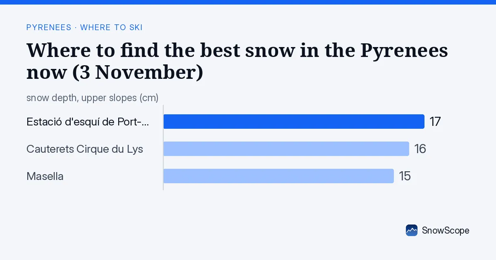
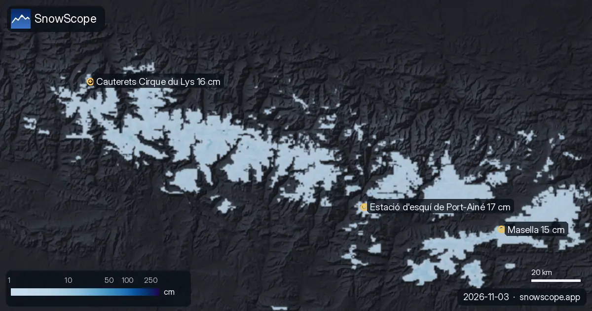

Where to find the best snow in the Pyrenees now (3 November)
Three resorts stand out for early-season snow on 3 November: Estació d'esquí de Port-Ainé leads with 17 cm on its upper slopes, followed by Cauterets Cirque du Lys at 16 cm and Masella at 15 cm. All three received fresh snow overnight, but the coverage is thin and concentrated at high altitude.
See the live snow forecast for Masella in the SnowScope appSnow depth, powder alerts and the 3D map, free.
Upper slopes hold the most snow
Port-Ainé's peak sits at 2,424 m, where the snow is deepest. Masella reaches 2,509 m—its highest ground—and shows 4 cm at the summit. Cauterets Cirque du Lys tops out at 2,420 m. At all three resorts, the mid-mountain band (around 2,050 m) has only 1–3 cm, while base elevations are nearly bare.
The snowfall pattern is clear: on 3 November each resort received 4–10 cm of new snow, but most of it fell on the highest ground. Lower terrain shows little accumulation, so plan your runs above 2,000 m for the best chance of consistent coverage.
| Resort | Snow depth | New snow, 72 h | Coming, next days | Top |
|---|---|---|---|---|
| Masella | 15 cm | 10 cm | 4 cm | 2,509 m |
| Estació d'esquí de Port-Ainé | 17 cm | 5 cm | 3 cm | 2,424 m |
| Cauterets Cirque du Lys | 16 cm | 4 cm | 2 cm | 2,420 m |

Temperature layers shape the snow quality
The freezing level—the height where air temperature drops to 0°C—varies by day and resort. At Masella, it ranges from 1,680 m to 2,160 m on 3 November. At Port-Ainé it stays lower, between 1,650 m and 2,050 m on 4 November. This means slopes between base and mid-mountain are likely above freezing, turning yesterday's fresh snow heavy.
Above the freezing level, the new snow remains dry and light. This window narrows as the day warms: ski higher slopes in the afternoon, or start early on north-facing terrain where shade keeps snow colder longer.

Aspect and shade matter more than usual
North-facing slopes stay frozen longer in early season and preserve snow better than south-facing aspects. At all three resorts, pick shaded terrain wherever the trail map offers it. South-facing runs lose surface conditions quickly once the sun hits them in the afternoon.
The snow is thin enough that any south-facing slope exposed to full sun will turn soft by mid-morning. Plan accordingly: ride lifts to the top early, ski north slopes or forested terrain, and check the sun angle before choosing your line.
What the next few days will bring
More snow is coming but in small amounts. By 6 November, Masella will have picked up around 4 cm total, Port-Ainé about 3 cm and Cauterets about 2 cm across all elevations. The forecast shows flakes on 4 and 5 November but little accumulation.
The outlook changes quickly in autumn: check the snow map again the morning you plan to ski. A day or two of cold nights could also bind and stabilize the existing layer, making conditions firmer and potentially better.
Early season means exposed terrain
Thin snow conceals rocks, grass and other obstacles. Stay on groomed, open pistes until you know the snowpack is deeper. Even at Masella's peak, only 4 cm lies above base rock; a few turns on a side slope or flatter terrain could expose the ground beneath.
Rocks and stumps are not the only hazard: early-season avalanche risk is low today (level 1), but stick to marked runs and ridges. Read the official avalanche bulletin (Météo-France) before any off-piste plan.
Logistics and timing
These three resorts have snow, but that does not mean all lifts are open. Check each resort's website for lift status, terrain availability and opening dates before you drive. Some terrain may remain closed until November deepens and snow thickens.
Early morning is your friend: frozen surfaces and thin light favor the first couple of hours after dawn. After mid-morning, warming and sun exposure soften the snow and increase slush on lower runs.
Tips for skiers
- Ski above 2,000 m at all three resorts; below that height, snow is thin or bare. North-facing slopes and shaded gullies hold snow longest.
- Start your day early. Frozen overnight snow softens once the sun climbs; by mid-morning lower slopes turn to slush or expose terrain.
- Stay on groomed, marked terrain. Early-season snow of 15–17 cm can hide rocks and vegetation. Off-piste and side slopes are risky.
- Check the resort website for lift and terrain opening before you go. Snow on the map does not mean the resort is running all its services.
- Read the Météo-France avalanche bulletin before any off-piste plan, even though risk is low today.
About these numbers
Resort snow depths are the deepest snow on the resort's upper slopes on the date shown; they are estimates for an area, not a measurement at one point. Forecasts can change. Always read the official avalanche bulletin before going off-piste.
Official avalanche bulletins: Météo-France – Bulletin d'estimation du risque d'avalanche
Cite this report
For research, teaching or the press: the numbers and charts are free to reuse under CC BY 4.0 with this citation.
SnowScope (2026), Where to find the best snow in the Pyrenees now (3 November), https://snowscope.app/blog/en/2026/11/pyrenees-where-to-ski-best-snow-3-november-2026.html, accessed 2026-11-03
SnowScope (Atlas Labs). (2026, November 3). Where to find the best snow in the Pyrenees now (3 November). SnowScope snow reports. https://snowscope.app/blog/en/2026/11/pyrenees-where-to-ski-best-snow-3-november-2026.html
BibTeX
@misc{snowscope2026pyreneeswheretoskibestsn,
author = {{SnowScope (Atlas Labs)}},
title = {Where to find the best snow in the Pyrenees now (3 November)},
year = {2026},
month = nov,
howpublished = {\url{https://snowscope.app/blog/en/2026/11/pyrenees-where-to-ski-best-snow-3-november-2026.html}},
note = {Published 2026-11-03 16:31 UTC; accessed 2026-11-03}
}· CC BY 4.0 · Methods, data and tools →
Masella: snow and temperature by height, this winter vs last (tools) →
Follow Masella
Free: a message when fresh snow is coming, and the forecast every morning.
More snow reports

Pyrenees snow report, 12 November. Looking ahead to 15 November, the forecast brings 33 cm at Cauterets Cirque du Lys, 29 cm at Piau-Engaly and 25 cm …

New snow will reach the Pyrenees in two waves over 14 days, with 91 cm forecast at high altitude. The first week brings 49 percent of the total; week 2 stays steady. Data from 19 November.

Pyrenees snow report 15 November: mixed rain and snow at Cauterets, 7–19 cm fell in 72 hours near the summit. More coming by 18 November.